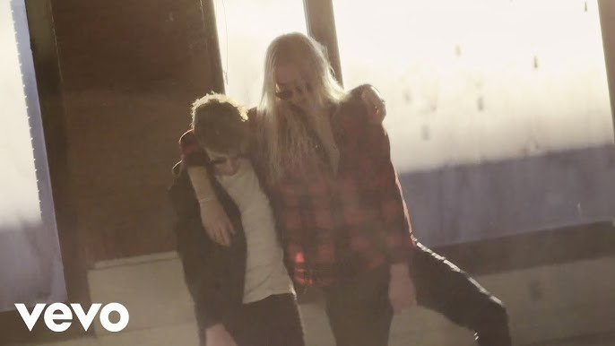
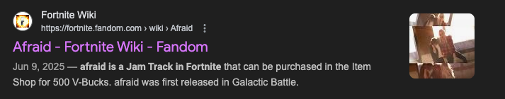

afraid
"WHAT DO YOU FEEL AFRAID?"
Afraid was released on Jan 30th, 2025. After being previewed during his tour for his at the time most recent album, "boy" along with Nate Sib. Afraid reeased among a music video, recorded in an abandoed mall and facotry. The music video shows 2 and Nate Sib together, dancing and partying as the song goes on. Afraid was ranked one the best songs released the week it was by websites like Consequence, The Face, Uproxx, and Hypebeast.

